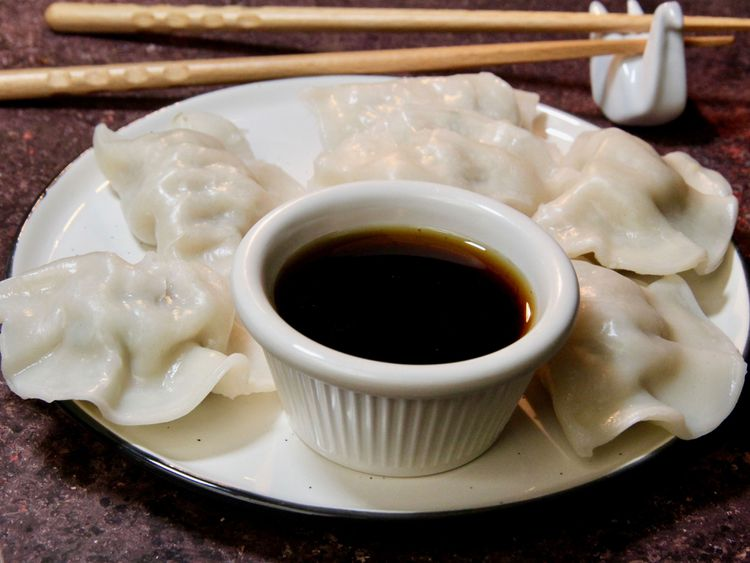

This easy, authentic Japanese gyoza dipping sauce recipe (餃子のタレ) only needs 3 ingredients & 1 minute to make! It's sweet & spicy, and can also be drizzled on chicken noodle soup. Whether it's prawn/ shrimp or pork dumplings, this is the best sauce for them! (Chili Oil Optional.)
In a small bowl or ramekin, stir together the soy sauce and rice vinegar. Drip in the chili oil to taste. Stir with chopsticks, and dip away!